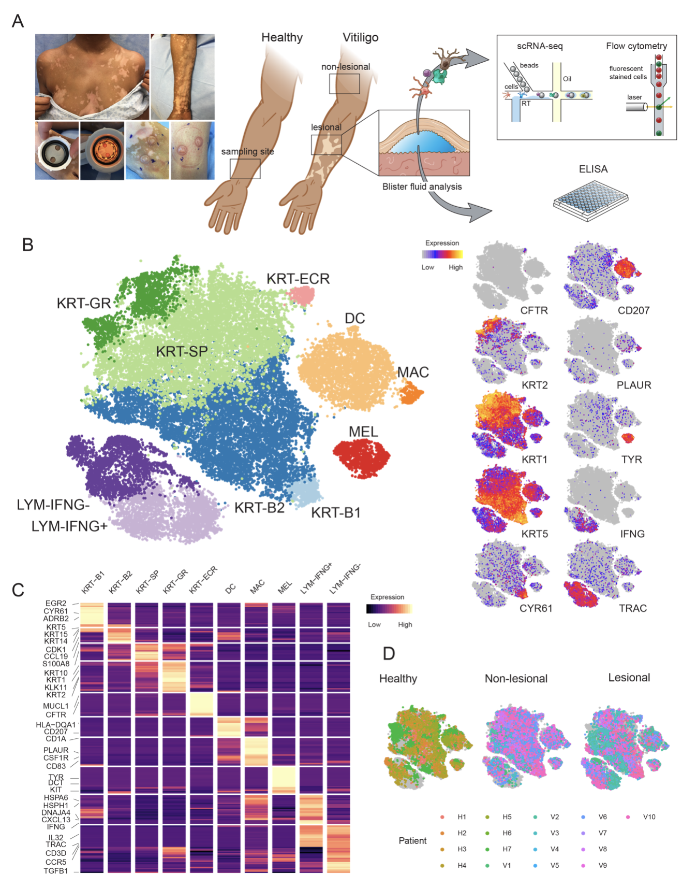

Vitiligo is an autoimmune skin disease characterized by the targeted destruction of melanocytes by T cells. Cytokine signaling between keratinocytes and T cells results in CD8+ T cell infiltration of vitiligo lesions, but the full scope of signals required to coordinate autoimmune responses is not completely understood (Gellatly et. al 2021).
We performed scRNA-seq on affected and unaffected skin from vitiligo patients, as well as healthy controls, to define the role of each cell type in coordinating autoimmunity during disease progression, and in order to analyze this high dimensional data, we have implemented a novel end-to-end scRNA data analysis package called SignallingSingleCell. You can also interactively browse the results of our manuscript and the UMI table using Cellxgene Browser.
All raw sequencing data was processed by the scRNA-Seq inDrop pipeline developed within the interactive pipeline manager DolphinNext (Yukselen et. al 2020), and currently being hosted in DolphinSuite high throughput data analysis platform.
Using SignallingSingleCell, we confirmed that type 1 cytokine signaling occupied a central role in disease, but we also discovered that this pathway was used by regulatory T cells (Tregs) to restrain disease progression in non-lesional skin. We determined that CCL5-CCR5 signaling served as a chemokine circuit between effector CD8+ T cells and Tregs, and mechanistic studies in a mouse model of vitiligo revealed that CCR5 expression on Tregs was required to suppress disease in vivo but not in vitro.
The raw .fastq files have been deposited through dbGAP. These files are protected, and you will need an account and to request access to download the files. As of 10/5/21 the data files are processing on the dbGAP server.
https://www.ncbi.nlm.nih.gov/projects/gap/cgi-bin/study.cgi?study_id=phs002455.v1.p1
For convenience we are providing 3 processed data tables here. One is a raw sparse matrix, that is the output of our processing pipeline with no further manipulation. We are also providing a fully processed UMI table that has been filtered, dimension reduced, clustered, and normalized. The processed UMI table is provided in the ExpressionSet class format. We are also providing a separate processed UMI table for the T Cells.
Processed UMI Table of T-cells

Gellatly KJ, Strassner JP, Essien K, Refat MA, Murphy RL, Coffin-Schmitt A, Pandya AG, Tovar-Garza A, Frisoli ML, Fan X, Ding X, Kim EE, Abbas Z, McDonel P, Garber M, Harris JE. scRNA-seq of human vitiligo reveals complex networks of subclinical immune activation and a role for CCR5 in Treg function. Sci Transl Med. 2021 Sep 8;13(610):eabd8995. doi: 10.1126/scitranslmed.abd8995. Epub 2021 Sep 8. PMID: 34516831; PMCID: PMC8686160. [View]
Yukselen, O., Turkyilmaz, O., Ozturk, A.R. et al. DolphinNext: a distributed data processing platform for high throughput genomics. BMC Genomics 21, 310 (2020). [View]